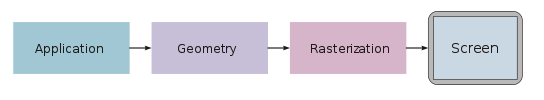

Computer Graphics Study Note
Generally speaking, computer graphics is about how to display what you want on the computer screen. Nowadays, when people refer to this topic, they mean the algorithms that display 3D models on the screen. To directly understand the concept of computer graphics from the application level, we can take a look at two popular pipelines: OpenGL render pipeline and DirectX render pipeline.
General graphics pipeline
In general, a graphics pipeline can be divided into three main parts: Application, Geometry and Resterization.

During the application stage, the developers will decide what is inside the scene, for example, animation, collison detection and sometimes culling is calculated with the hardware CPU. The output information will then be passed to the GPU to determine how to actually display the scene.
After the application procedure, the Geometry and Rasterization stages will depend on the concrete graphic APIs. Graphics application programming interfaces (APIs) such as Direct3D and OpenGL were created to unify similar steps and to control the graphics pipeline of a given hardware accelerator. These APIs abstract the underlying hardware and keep the programmer away from writing code to manipulate the graphics hardware accelerators (AMD/Intel/NVIDIA etc.). Of course, applications such as Unity, Unreal Engine, or some 3D modeling software, they would have slightly different pipelines that are built based on more low-level APIs like OpenGL.
Thus, we talk about two typical graphic APIs: OpenGL and Direct 3D.
OpenGL

-
Vertex Specification : In Vertex Specification, list an ordered list of vertices that define the boundaries of the primitive. Along with this, one can define other vertex attributes like color, texture coordinates etc. Later this data is sent down and manipulated by the pipeline.
-
Vertex Shader : The vertex specification defined above now pass through Vertex Shader. Vertex Shader is a program written in GLSL that manipulate the vertex data. The ultimate goal of vertex shader is to calculate final vertex position of each vertex. Vertex shaders are executed once for every vertex(in case of a triangle it will execute 3-times) that the GPU processes. So if the scene consists of one million vertices, the vertex shader will execute one million times once for each vertex. The main job of a vertex shader is to calculate the final positions of the vertices in the scene.
-
Tessellation : This is a optional stage. In this stage primitives are tessellated i.e. divided into smoother mesh of triangles.
-
Geometry Shader : This shader stage is also optional. The work of Geometry Shader is to take an input primitive and generate zero or more output primitive. If a triangle strip is sent as a single primitive, geometry shader will visualize a series of triangles. Geometry Shader is able to remove primitives or tessellate them by outputting many primitives for a single input. Geometry shaders can also convert primitives to different types. For example, point primitive can become triangles.
Note: In general, the transformation of the perspective happens at the time. Namely, we project the 3D model onto the 2D plane with z-buffer.
-
Vertex Post Processing : This is a fixed function stage i.e. user has a very limited to no control over these stages. The most important part of this stage is Clipping. Clipping discards the area of primitives that lie outside the viewing volume. After Clipping, Face culling can cull the triangles based on their normal vector in the space to avoid rendering triangles facing away from the viewer.
-
Primitive Assembly : This stage collects the vertex data into a ordered sequence of simple primitives(lines, points or triangles).
-
Rasterization : This is an important step in this pipeline. The output of rasterization is a fragments.
-
A fragment is a set of state that is used to compute the final data for a pixel (or sample if multisampling is enabled) in the output framebuffer. The state for a fragment includes its position in screen-space, the sample coverage if multisampling is enabled, and a list of arbitrary data that was output from the previous vertex or geometry shader.
-
This last set of data is computed by interpolating between the data values in the vertices for the fragment. The style of interpolation is defined by the shader that outputed those values.
-
Note: In general, texture is loaded during this stage and the information is sent to the Fragment Shader.
-
Fragment Shader : Although not necessary a required stage but 96% of the time it is used. This user-written program in GLSL calculates the color of each fragment that user sees on the screen. The fragment shader runs for each fragment in the geometry. The job of the fragment shader is to determine the final color for each fragment. Fragment shaders are not able to set the stencil data for a fragment, but they do have control over the color and depth values.
-
Per-sample Operations : There are few tests that are performed based on user has activated them or not. Some of these tests for example are Pixel ownership test, Scissor Test, Stencil Test, Depth Test.
After this, color blending happens. For each fragment color value, there is a specific blending operation between it and the color already in the framebuffer at that location.
Lastly, the fragment data is written to the framebuffer. Masking operations allow the user to prevent writes to certain values. Color, depth, and stencil writes can be masked on and off; individual color channels can be masked as well.
Directx 3D

-
Input-Assembler Stage : The purpose of the input-assembler stage is to read primitive data (points, lines and/or triangles) from user-filled buffers and assemble the data into primitives that will be used by the other pipeline stages. The IA stage can assemble vertices into several different primitive types (such as line lists, triangle strips, or primitives with adjacency).
-
Vertex Shader Stage : The vertex-shader (VS) stage processes vertices from the input assembler, performing per-vertex operations such as transformations, skinning, morphing, and per-vertex lighting. Vertex shaders always operate on a single input vertex and produce a single output vertex. The vertex shader stage must always be active for the pipeline to execute. If no vertex modification or transformation is required, a pass-through vertex shader must be created and set to the pipeline.
-
Tessellation Stages : The Direct3D 11 runtime supports three new stages that implement tessellation, which converts low-detail subdivision surfaces into higher-detail primitives on the GPU. Tessellation tiles (or breaks up) high-order surfaces into suitable structures for rendering.
-
Geometry Shader Stage : The geometry-shader (GS) stage runs application-specified shader code with vertices as input and the ability to generate vertices on output. Geometry shaders can also bring in the vertex data for the edge-adjacent primitives as input (an additional two vertices for a line, an additional three for a triangle).
-
Stream-Output Stage : The purpose of the stream-output stage is to continuously output (or stream) vertex data from the geometry-shader stage (or the vertex-shader stage if the geometry-shader stage is inactive) to one or more buffers in memory (see Getting Started with the Stream-Output Stage).
-
Rasterizer Stage : The rasterization stage converts vector information (composed of shapes or primitives) into a raster image (composed of pixels) for the purpose of displaying real-time 3D graphics. During rasterization, each primitive is converted into pixels, while interpolating per-vertex values across each primitive. Rasterization includes clipping vertices to the view frustum, performing a divide by z to provide perspective, mapping primitives to a 2D viewport, and determining how to invoke the pixel shader. While using a pixel shader is optional, the rasterizer stage always performs clipping, a perspective divide to transform the points into homogeneous space, and maps the vertices to the viewport.
-
Pixel Shader Stage : The pixel-shader stage (PS) enables rich shading techniques such as per-pixel lighting and post-processing. A pixel shader is a program that combines constant variables, texture data, interpolated per-vertex values, and other data to produce per-pixel outputs. The rasterizer stage invokes a pixel shader once for each pixel covered by a primitive, however, it is possible to specify a NULL shader to avoid running a shader.
-
Output-Merger Stage : The output-merger (OM) stage generates the final rendered pixel color using a combination of pipeline state, the pixel data generated by the pixel shaders, the contents of the render targets, and the contents of the depth/stencil buffers. The OM stage is the final step for determining which pixels are visible (with depth-stencil testing) and blending the final pixel colors.